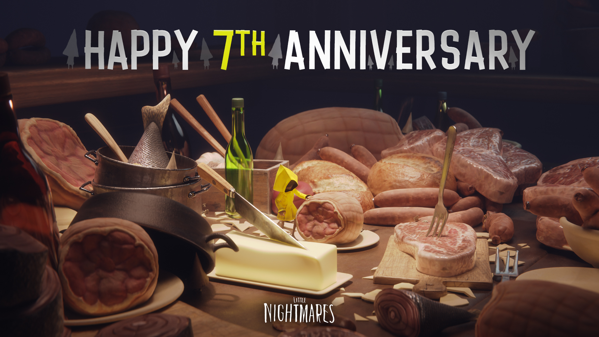
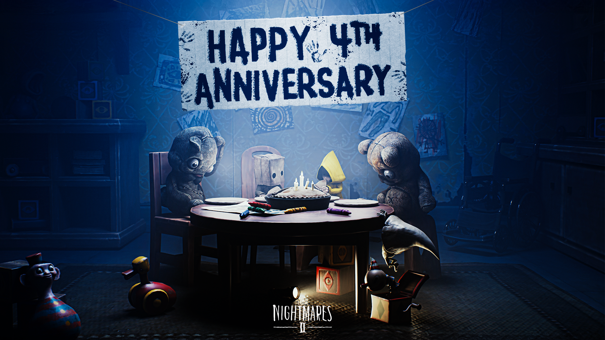

this page is a stub,, waiting for the third game
if you weren't aware, little nightmares 1 & 2 recently each had their 7th and 4th anniversary's, respectively. i've played both of the games and i love them to bits, especially the first game since i remember when i first got to play the game.
i would replay it over and over while sitting in the back room of my dad's work, an insurance agency, on an xbox. the first time i (spoiler alert) witnessed the death of the lady, all i could do is watch with a running heart. the slow realization i had when six made her brutal march outside of the maw made this game all too memorable to me.
and i can't forget the dlc. the boy has the perfect tie-in to the main game, one of the scariest enemies to face (from the first game) in my opinion, and a captivating ending that left me speechless as i experienced it for myself. i wish i could have witnessed it blind, but if you haven't yet then please do check it out for yourself.
the second game is another treasure to me. it keeps the spirit of the first game, but expanding upon the delivery with a larger budget, story, and ending. The lore surrounding this game is wonderful as it stands as a surprise prequel when it could so easily have been some trashy continuation of six's story post-maw. what we get is a completely new character, mono, who is essentially 'the boy' deluxe. cutesy character design (i'm talking about the return of the hats btw), personality is shown a lot more in comparison, and such a gut-wrenching ending that always fills my stomach with dread.
ughhhh i could go on and on for hours just yapping about every little detail in these two games. six's raincoat is such a genius way to bring a recognizable character sillhouette alike those seen in cartoons or animations to an art style that wouldn't naturally allow it. i love the subtle stylization of everything, it did what 'hello neighbor' failed to.
i've come to appreciate (i hated it when i played it) the scp-esque section of little nightmares 2, when mono is left in a room with mannequins that only move when a flashlight is shined upon. it does remind me of the first game's lady's quarters section, specifically the shadow children. the slow burn reveal that mono is (HUGE SPOILER WARNING FOR THE SECOND GAME) the thin man through the final cutscene of the game fills me with dread alike when the boy is left to be murdered by six. it is easy to draw the conclusion that both the boy and mono have been hugely negatively impacted by six, which conflicts with the fact that you naturally want to empathize with her. i mean, you literally controlled her in the first game.
when the third game releases, i will be playing it with a friend of course, and i will rant about it here for probably a while. i'm just praying (not really haha) and hoping that the third game lives up to its expectations. ahh!!!!